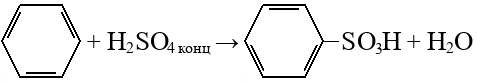

Определение
Ароматические углеводороды — циклические органические соединения, которые имеют в своём составе ароматическую систему и общую формулу:
CnH2n-6
n≥6
Имеют sp2 гибридизацию.
Важнейший ароматический углеводород — бензол.
Примеры
Изомерия
- Изомерия положения заместителей:
орто-диметилбензол мета-диметилбензол пара-диметилбензол - Изомерия углеродного скелета заместителей
изопропилбензол пропилбензол
Физические свойства
Токсичные жидкости, имеющие характерный запах.
Плохо растворимы в воде, хорошо - в органических растворителях.
При этом сами являются хорошими растворителями органических веществ.
Получение
- В промышленности: из нефти
- Дегидроциклизация алканов (≥6 C):

- Дегидрирование циклоалканов:

- Тримеризация ацетилена:
Химические свойства
- Реакции замещения
- Галогенирование (галоген + соль железа):
- Нитрирование:
- Сульфирование:
 - Алкилирование:
бензол + алкен:
бензол + галогенпроизводное:
- Синтез Вюрца-Фиттига (дегалогенирование):
- Реакции присоединения (разрушается бензольное кольцо):
- Галогенирование:
- Гидрирование:
- Реакции по заместителю
- При галогенировании гомологов бензола под действием облучения галоген присоединяется в боковую цепь:
- Окисление
- Горит сильно коптящим пламенем
- Неполное окисление
Бензол устойчив к оксилению. Его гомологи окисляются до карбоксильной группы при атоме C, связанном с бензольным кольцом, остальные атомы до альдегидов (CO2 при заместителе этиле):
Направляющие заместители
|
Заместители I рода (электронодоноры) подают электроны на бензольное кольцо и увеличивают электронную плотность в орто- и пара- положениях. Направляют второй заместитель в орто- и пара- положения. |
Заместители II рода (электроноакцептроры) оттягивают электроны от бензольного кольца Направляют второй заместитель в мета- положения. |
 |